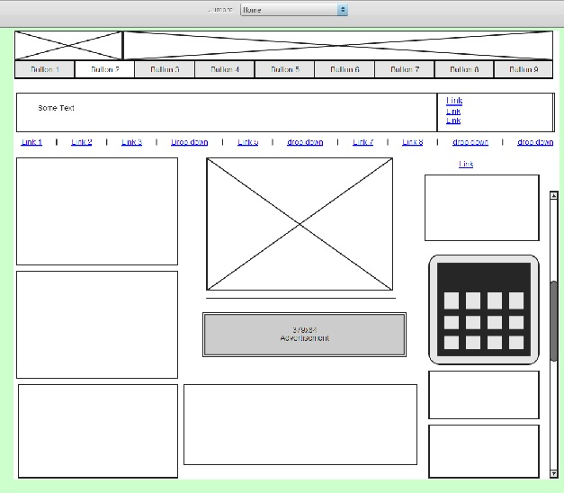
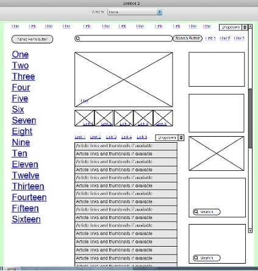
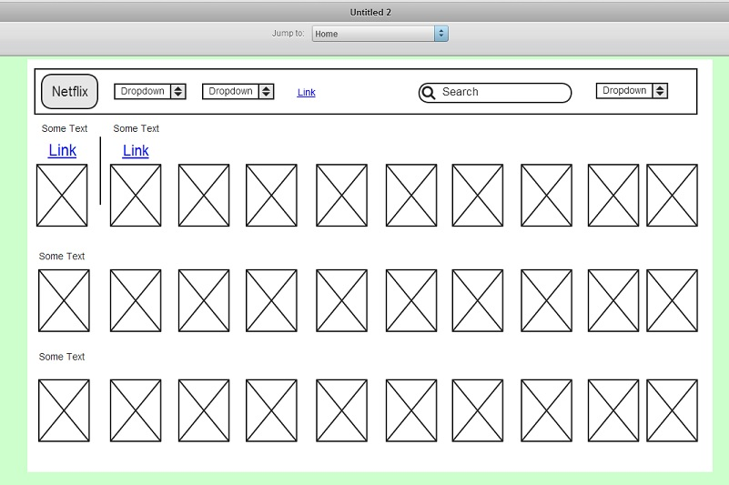

Newcelica

This webpage is the homepage of the newcelica forums. It is the central hub for navigating wherever the user needs to go. Visually it is abundant in information with numerous links, some divs have links of lists, within each div. As a frequent user I'm not on the home page longer than 3 seconds.
Yahoo

This webpage is the homepage of Yahoo. It provides tons of information including divs with calendar, weather, sports scores, and new articles. This page has a lot of content with links on top of image links in divs within divs.
Netflix

This page is NOT the homepage of Netflix, instead is the list of movies you would typically see in a member's preferences. This is more visually clean and simple with scrolling grids of image links.